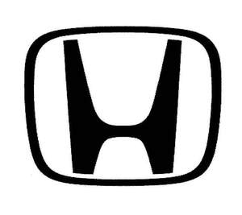

Trade Mark Journal No.2025/025 20 June 2025
UK00004213008 3 June 2025 (35,37)

- Class 35
- Presentation of goods on communication media, for retail purposes; advertising; advertising services; publicity; online advertising via a computer communications network; advertising automobiles for sale by means of the Internet; advertising and publicity services provided via television, radio or mail; radio advertising; online advertising on a computer network; outdoor advertising; demonstration of goods; promoting the goods and services of others through the administration of sales and promotional incentive schemes involving trading stamps; the bringing together and display, for the benefit of others, of a variety of goods, namely, clothing, foods and beverages, livingware, footwear other than special footwear for sports, bags, pouches, personal articles, automobiles, two-wheeled motor vehicles, electrical machinery and apparatuses, computer software, fuel, toys, dolls, game machines and apparatus, clocks, watches, spectacles [eyeglasses and goggles], mineral oils and greases for industrial purposes [not for fuel], non-mineral oils for industrial purposes [not for fuel], and industrial oils, enabling customers to conveniently view and purchase those goods; business management analysis; business consultation services; business management; business administration; market canvassing; market canvassing services; market research; market research services; market research studies; market surveys; providing information concerning commercial sales; business management of hotels; administrative hotel management; business management of hotels for others; business operation and administration of battery sharing business; business operation and administration of battery rental business, including sale services thereof; preparation of financial statements; financial statement preparation; drawing up of statements of accounts; employment agencies; employment agency services; job placement; job placement services; staff placement services; auctioneering; auction services; conducting of auction sales; import and export agencies; import-export agency services; arranging newspaper subscriptions for others; newspaper subscriptions; copying of documents; document copying; document copying services; document reproduction; office functions; office functions, namely filing, in particular documents or magnetic tapes; providing business assistance to others in the operation of data processing apparatus namely, computers, typewriters, telex machines and other similar office machines; reception services for visitors in buildings [office functions]; publicity material rental; leasing of marketing materials; leasing of publicity and marketing materials; rental of publicity and marketing materials; rental of typewriters and copying machines; providing commercial information and advice for consumers in the choice of products and services; providing employment information; retail services or wholesale services connected with the sale of a variety of goods in each field of clothing, foods and beverages, and livingware, carrying all goods together; retail services or wholesale services connected with the sale of clothing; retail services or wholesale services connected with the sale of footwear, other than special footwear for sports; retail services or wholesale services connected with the sale of bags and pouches; retail services or wholesale services connected with the sale of personal articles; retail services or wholesale services connected with the sale of automobiles; retail services or wholesale services connected with the sale of two-wheeled motor vehicles and motorcycles; retail services or wholesale services connected with the sale of three-wheeled motor vehicles and tricycles; retail services or wholesale services connected with the sale of high pressure washers; retail services or wholesale services connected with the sale of loading-unloading machines and apparatus; retail services or wholesale services connected with the sale of earth moving machines; retail services or wholesale services connected with the sale of ground surface finishing and compacting machines; retail services or wholesale services connected with the sale of asphalt paving machines; retail services or wholesale services connected with the sale of rammers [machines]; retail services or wholesale services connected with the sale of plate compactors; retail services or wholesale services connected with the sale of trowels; retail services or wholesale services connected with the sale of snow ploughs; retail services or wholesale services connected with the sale of agricultural machines and agricultural implements, other than hand-operated; retail services or wholesale services connected with the sale of cultivators [machines]; retail services or wholesale services connected with the sale of motorized cultivators and power tillers; retail services or wholesale services connected with the sale of brush cutters; retail services or wholesale services connected with the sale of power sprayers for agricultural and forestry purposes; retail services or wholesale services connected with the sale of spraying machines; retail services or wholesale services connected with the sale of grass cutters; retail services or wholesale services connected with the sale of non-electric prime movers; retail services or wholesale services connected with the sale of parts of non-electric prime movers; retail services or wholesale services connected with the sale of engines; retail services or wholesale services connected with the sale of outboard motors; retail services or wholesale services connected with the sale of motors for boats; retail services or wholesale services connected with the sale of motors and engines; retail services or wholesale services connected with the sale of gasoline engines; retail services or wholesale services connected with the sale of driving motors; retail services or wholesale services connected with the sale of propulsion mechanisms; retail services or wholesale services connected with the sale of pumps; retail services or wholesale services connected with the sale of pumps [machines]; retail services or wholesale services connected with the sale of pumps [parts of machines, engines or motors]; retail services or wholesale services connected with the sale of water pumps; retail services or wholesale services connected with the sale of blowers; retail services or wholesale services connected with the sale of washing installations for vehicles; retail services or wholesale services connected with the sale of lawnmowers; retail services or wholesale services connected with the sale of ride-on lawn mowers; retail services or wholesale services connected with the sale of starters for motors and engines; retail services or wholesale services connected with the sale of motors; retail services or wholesale services connected with the sale of direct current motors; retail services or wholesale services connected with the sale of electric motors and parts thereof; retail services or wholesale services connected with the sale of electric motors for machines; retail services or wholesale services connected with the sale of AC motors and DC motors; retail services or wholesale services connected with the sale of generators of electricity; retail services or wholesale services connected with the sale of AC generators [alternators]; retail services or wholesale services connected with the sale of DC generators; retail services or wholesale services connected with the sale of electrical machinery and apparatuses; retail services relating to computer software; retail services or wholesale services connected with the sale of fuel; retail services or wholesale services connected with the sale of toys, dolls, game machines and apparatus; retail services or wholesale services connected with the sale of clocks, watches and spectacles [eyeglasses and goggles]; retail services connected with the sale of mineral oils and greases for industrial purposes [not for fuel], non-mineral oils for industrial purposes [not for fuel], and industrial oils; computerised information processing using artificial intelligence; collection of electronic data.
- Class 37
- Aircraft repair or maintenance; airplane maintenance and repair; repair or maintenance of vessels; vehicle maintenance and repair; vehicle repair services; care and repair of vehicles; vehicle maintenance; providing information relating to vehicle repair; consultancy relating to vehicle repair; vehicle breakdown repair services; vehicle polishing; vehicle greasing; vehicle lubrication; anti-rust treatment for vehicles; cleaning of vehicles; vehicle battery changing; vehicle battery charging; recharging services for electric vehicles; fueling of vehicles; refueling of vehicles; refurbishment of vehicle; repair of bicycles; bicycle repair; maintenance and repair of land vehicles; repair and maintenance of electric vehicles; refueling of land vehicles; repair of couplings for land vehicles; motor vehicle maintenance and repair; vehicle service stations [refuelling and maintenance]; battery charging service for motor vehicles; battery charging service for three-wheeled motor vehicles and tricycles; natural gas refuelling service for motor vehicles; tuning of motors and engines for automobiles; providing information relating to the repair or maintenance of automobiles; providing information relating to the maintenance of automobiles; custom installation of exterior, interior and mechanical parts of vehicles [tuning]; car repair and maintenance; repair of automobiles; auto body repair services; care and repair of automobiles; car in transit repair; automotive surface repair; automobile greasing; repair and maintenance of car engines; automotive oil change services; mobile automotive oil change services provided at the customer's location; providing self-service car washing facilities; repair or maintenance of automobiles; repair or maintenance of two-wheeled motor vehicles and motorcycles; repair or maintenance of three-wheeled motor vehicles and tricycles; providing information relating to the repair or maintenance of two-wheeled motor vehicles; repair or maintenance of photographic machines and apparatus; repair or maintenance of non-electric prime movers, not for land vehicles; repair or maintenance of pneumatic or hydraulic machines and instruments; repair or maintenance of pumps; pump repair or maintenance; repair or maintenance of boilers; repair or maintenance of freezing machines and apparatus; repair or maintenance of computers, including electronic circuits and magnetic disks recorded with computer programs, central processing units and other peripheral apparatus; repair or maintenance of telecommunication machines and apparatus; repair or maintenance of air-conditioning apparatus [for industrial purposes]; repair or maintenance of consumer electric appliances; repair or maintenance of consumer electrical appliances; repair or maintenance of electric lighting apparatus; repair or maintenance of starters for motors and engines; repair or maintenance of electric motors; repair or maintenance of AC motors and DC motors [not including those for land vehicles]; repair or maintenance of power generators; repair or maintenance of AC generators [alternators] and DC generators; recharging of batteries and accumulators; recharging of batteries; repair or maintenance of laboratory apparatus and instruments; repair or maintenance of measuring and testing machines and instruments; repair or maintenance of medical apparatus and instruments; repair or maintenance of medical machines and apparatus; repair or maintenance of chemical processing machines and apparatus; repair or maintenance of integrated circuits manufacturing machines; repair or maintenance of semiconductor manufacturing machines; repair or maintenance of painting machines and apparatus; repair or maintenance of plowing machines and implements, other than hand-held tools; repair or maintenance of cultivating machines and implements; repair or maintenance of harvesting machines and implements; repair or maintenance of gasoline station equipment; repair or maintenance of mechanical parking systems; repair or maintenance of vehicle washing installations; repair or maintenance of amusement machines and apparatus; repair or maintenance of water purifying apparatus; repair or maintenance of divers' apparatus; repair or maintenance of diving machines and apparatus; repair or maintenance of lawnmowers; repair or maintenance of charging device and stations for electric vehicles; repair or maintenance of gas water heaters; repair of toys or dolls; repair of sports equipment; rental of construction machines and apparatus; rental of car-washing apparatus; rental of portable battery chargers for electric cars; rental of portable battery chargers for electric two-wheeled motor vehicles and electric motorcycles; rental of portable battery chargers for electric three-wheeled motor vehicles and electric tricycles; charging of electric vehicles.
Honda Motor Co., Ltd.
Representative: Stevens Hewlett & Perkins